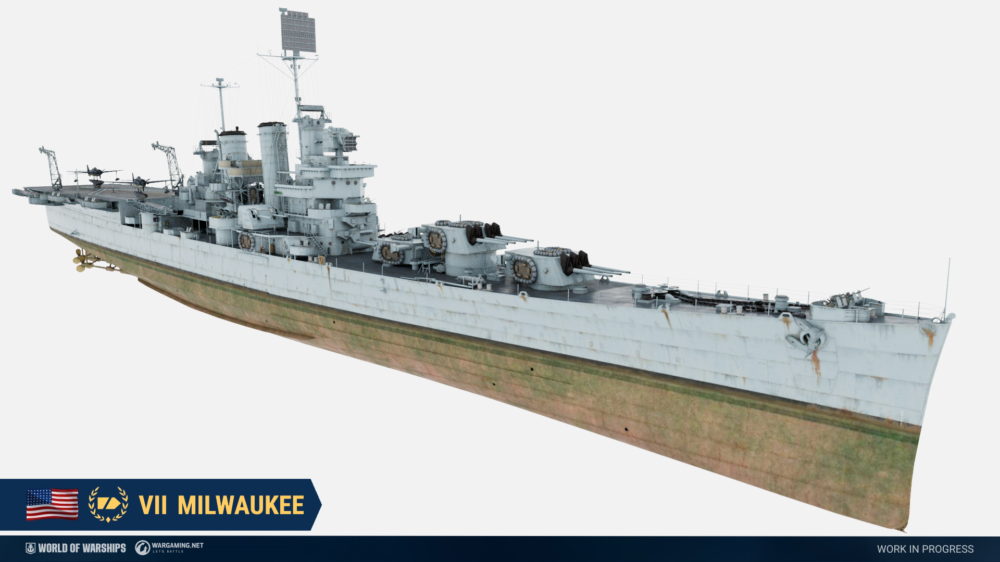

American cruisers Milwaukee and Columbia will be added to the game in a future update.
American cruiser Milwaukee, Tier VII

A flight deck cruiser proposal dating back to the early 1930s. Shortly after the Washington Naval Treaty, the United States Navy wanted to develop a low cost platform for aircraft that could perform both scouting duties and artillery roles. The idea of a flight deck cruiser was at first appealing, as it would be considered as a cruiser and would not count towards the limits set for aircraft carriers under the treaty. One of the proposed designs was described as half of a Brooklyn class forwards, and half of an aircraft carrier aft.
Similar to the likes of Tier VIII Japanese cruiser Tone, we were inspired to refit a Brooklyn class cruiser into a hybrid based on the characteristics of the flight deck cruiser designs the American navy came up with in the interwar period. Milwaukee has a total of 11 guns concentrated at the bow using triple turrets from the Brooklyn class and quadruple turrets from preliminary American light cruiser designs.
American cruiser Columbia, Tier X
The ship is at a very early stage of modeling.
In the years leading up to the 1920s, a series of design studies on "maximum battleships" was prepared by the Bureau of Construction and Repair of the American Navy. These designs were largely influenced by Senator Tillman who was annoyed with the navy's requrest to build larger ships every year and proposed to build the largest battleships possible, with the only limitation being the dimensions of the locks of the Panama Canal. The final design that was presented to Congress was IV-2, which consisted of fifteen 18-inch guns in five triple turrets, two fore and three aft. The ship would displace over 70,000 tons and would have a top speed of 25.2 knots.
The American Navy could have launched a design study on "maximum cruisers" based on the IV-2 design in the hopes of constructing a more practical capital ship with an emphasis on large quantities of 12-inch guns, similar to the ones mounted on the Alaska class cruisers. Columbia equips the same amount of guns as the IV-2 design in a similar layout but is armed with 12-inch instead of 18-inch guns.
Please note that all information in the development blog is preliminary. Announced adjustments and features may change multiple times during testing. The final information will be published on our game's website.